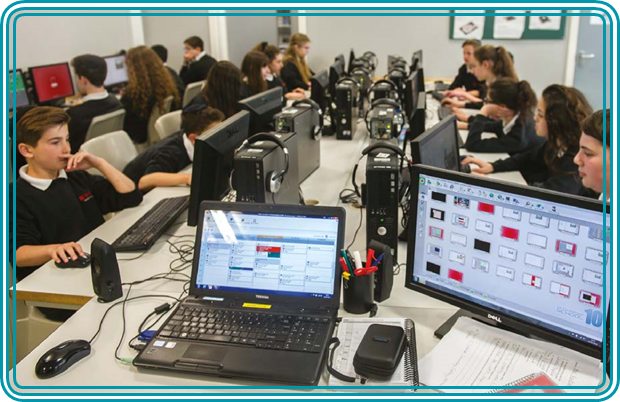
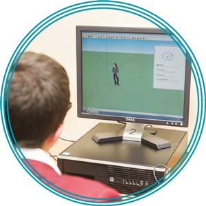

DFE provides information on the KS4 courses available and their impact on a schools performance tables (2014)
LGfL History of Computing resources and materials focusing on data formats and ranges of technology
LGfL Audio Network holds a large number of royalty free and reusable audio clips and loops
MEME esafety resources discuss the legality of reuse and non-attributing content
LGfL gallery contains a wide range of photos and images free for use and reuse by LGfL users
VideoCentral HD allows for videos to be uploaded and shared within a YouTube like interface, without advertising.
Blogging as a tool for learning can engage with audience and purpose and provide context for learning
BBC Bitesize resources on computers science and theoretical knowledge
Khan Academy offers a wide range of computer science and programming resources including theory and concepts
Code Org offers a wide rage of self guided learning that allow pupils to follow their own interests and understanding, including app development
Code Academy offers a range of learning resources for pupils to be able to develop coding skills in a range of software
Coder Dojo is a global network of free computer programming clubs for young people.
The LGfL Python tutor provides reactive and developing activities that can be used to understand the core principles of Python language, developing from the coding basics of the HTML tutor
The LGfL HTML tutor provides reactive and developing activities that can be used to understand the core principles of HTML and coding and can be used as a way to developing the coding basics
The LGfL History of Computing provides context, history and teaching materials for Ks3-5 to deliver a rounded and reflective learning experience, rather than skills based learning
LGfL History of Computing resources and materials focusing on real world computers that have impacted our world such as Colossus and Enigma.
UsOnline offers Ks3/4 context of esafety though practical simulations of online issues and challenges.
LGfL Cyberpass offer a range of esafety activities and testing tools to identify your own good practice and develop targeted learning
Meme offers KS4 context of esafety though practical simulations of online issues and challenges.
Secondary Esafety Matrix highlights key resources for the delivery of esafety in the secondary classroom
Digizen provides excellent and real world support, advice and education regards online life for teenagers
Thinkuknow provides resources and materials particularly regards stranger danger and online behaviours in the real world
Digital Literacy scheme of work developed in conjunction with SWGFL that covers all areas of online life for teenagers in real life and relevant ways
While it is not compulsory for pupils in Ks4 to take Computing as a subject, the delivery of the KS4 curriculum IS statutory for all students. How a school delivers this statutory responsibility is their own choice, but should be appropriate, challenging, mapped and assessed for progression and development. National Curriculum
Computing At School provide a response to DfE consultation on new GCSE CS criteria
Computing at School offer a response to DfE consultation on A level E CS criteria
Which? Advice on computing at University and the requirements for GCSE and A levels
Advice for Y9's on taking the right options at GCSE for their future aspirations
Royal Academy of Engineering information about computing and post Ks3 options linking to post KS5 and FE options
The London Grid for Learning offers a wide range of resources, materials and software that provides opportunities for pupils to apply and develop cross curricular use of ICT and technology:
Key Stage 4
All pupils must have the opportunity to study aspects of information technology and computer science at sufficient depth to allow them to progress to higher levels of study or to a professional career.
All pupils should be taught to:
-
develop their capability, creativity and knowledge in computer science, digital media and information technology

-
develop and apply their analytic, problemsolving, design, and computational thinking skills
-
understand how changes in technology affect safety, including new ways to protect their online privacy and identity, and how to identify and report a range of concerns.
Schools maintained by local authorities have a statutory duty to provide pupils with the opportunity to study computing at KS4; this can be done through examinable or non-examinable provision. Care must be taken that KS4 provision is planned and relevant to pupils. Where a school is unable to offer any computing qualifications or a pupil chooses not to pursue a computing qualification at KS4, the school still needs to further develop the capability and knowledge pupils acquired in KS1–KS3, either through computing classes or through other subjects.
Ideally, pupils should have the opportunity to specialise in an area of computing such as taking a qualification in information technology, computer science or digital media. This parallels the science curriculum, where pupils have the option to take joint or single

 sciences. Qualifications might be GCSEs or a more professionally oriented qualification in network management or database administration. If a school is unable to offer a range of qualifications, it could aim to provide the opportunity to study topics from IT, CS and DL.
Computer science is now recognised as a science, along with biology, chemistry and physics, and is therefore part of the English Baccalaureate (EBacc). Several exam boards now offer GCSE qualifications that cover sufficient computer science to count towards the EBacc, though not all of them are called GCSE Computer Science. These GCSEs, like those in other subjects, offer opportunities for pupils with a range of abilities to progress. Schools should aim to help pupils make informed choices, rather than discriminating based on factors such as their KS3 scores in mathematics.
It is important that any qualification offered by a school should be valued by employers and higher education institutions, and should support progression into A-levels, to further and higher education, or to a professional career.